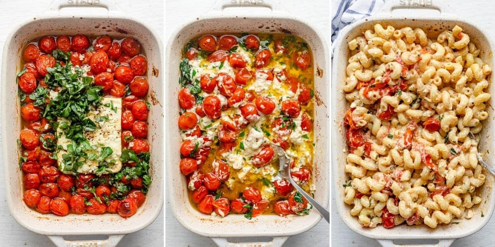
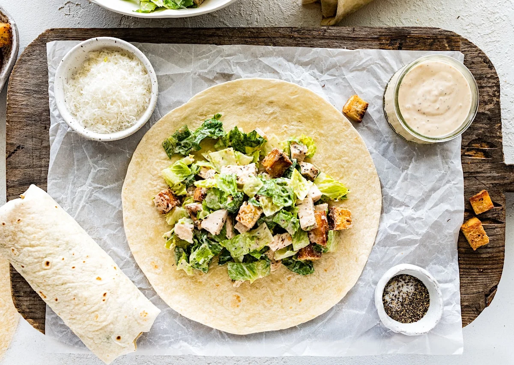
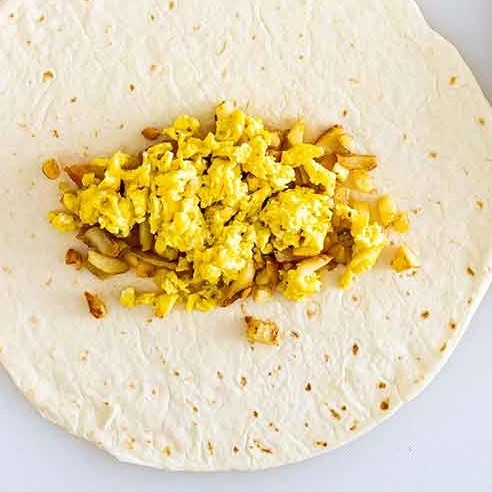

Baking On A Budget | Recipes
Note: Prices listed do not include common household products like salt, pepper, oil, etc.

Baked Feta Pasta | $11.57
6 Servings
Ingredients
- 8 oz penne pasta (or pasta of choice) | $0.98
- 10 oz grape tomatoes | $2.98
- 8 oz block feta cheese | $4.96
- 1/2 cup extra virgin olive oil
- 1/4 teaspoon salt
- 1/4 teaspoon black pepper
- 2 garlic cloves, minced | $0.67
- 1/4 cup packed chopped fresh basil (plus more for serving) | $1.98
Instructions
- Preheat oven to 400°F. Place the cherry tomatoes in an oven-safe baking dish. Pour the olive oil on top, and season with salt and pepper. Toss until well combined.
- Place the feta block in the middle of the baking dish surrounded by the cherry tomatoes, and flip a couple times to coat it with the olive oil and seasoning.
- Bake in the preheated oven for 35 minutes, until the cherry tomatoes burst, and the feta cheese melts.
- While the tomatoes and feta are baking, cook the pasta in a pot of salted water according to package instructions until al dente. Drain, reserving ½ cup of the cooking liquid in case you'd like to toss it in.
- Immediately add the garlic and basil leaves to the cooked tomatoes and feta and toss everything to combine.
- Transfer the cooked pasta to the baking dish and toss to combine. Garnish with more fresh basil and serve warm.


Chicken Caesar Wrap | $12.22
4 Servings
Ingredients
- 3 cups chopped romaine lettuce | $1.97
- 1 1/2 cups chopped cooked chicken of choice | $3.42
- 1/3 cup Caesar dressing | $1.97
- 1/3 cup grated Parmesan cheese | $2.88
- Salt and pepper to taste
- 4 tortillas | $1.98
Instructions
- In a large bowl, combine the lettuce, chopped chicken, Caesar dressing, and Parmesan cheese. Use tongs to toss well. Season with salt and pepper, to taste. Taste and add more dressing, if desired. Set aside.
- In a large pan, warm the tortillas over medium heat for about 15 to 30 seconds per side, just until they are pliable. Place on a plate and cover with a kitchen towel to keep them warm. Alternatively, you can warm them in the microwave in between paper towels for 15 to 30 seconds.
- Place the tortillas on a clean surface. Divide the Caesar salad mixture between the flour tortillas, placing it in the center of the tortilla. Fold in opposite sides of each tortilla, then roll up, burrito-style. You can stick a toothpick in the center to help keep them closed. Cut in half or serve the wraps whole.


Breakfast Burrito | $14.80
4 Servings
Ingredients
- 2 cups shredded hashbrowns | $3.42
- 8 eggs | $2.64
- 1 cup fiesta blend cheese, shredded | $2.22
- 1/2 cup salsa | $2.54
- Salt and pepper to taste
- 4 tortillas | $1.98
- 8 slices of bacon | $3.98
Instructions
- Cook the bacon in a skillet over medium heat until crispy. Once cooked, remove the bacon from the skillet and place it on paper towels to drain excess grease. Once cooled, crumble or chop the bacon into smaller pieces.
- In the same skillet with the bacon grease (or use a clean skillet if preferred), cook the shredded hashbrowns until they are golden brown and crispy. Season with salt and pepper to taste.
- In a separate bowl, crack the eggs and whisk them together. Pour the whisked eggs into the skillet and scramble them until fully cooked. Season with salt and pepper to taste.
- Warm up the tortillas either in the microwave or on a skillet. Place a portion of the scrambled eggs, cooked hashbrowns, crumbled bacon, shredded fiesta blend cheese, and salsa onto each tortilla.
- Fold the sides of the tortilla over the filling, then roll it up tightly to form a burrito shape.
- Serve the breakfast burritos immediately while warm. You can optionally serve them with extra salsa or other toppings of your choice.
